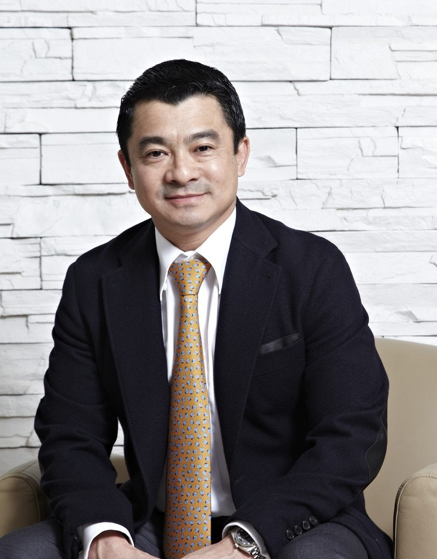
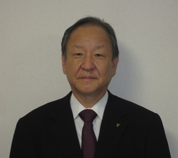
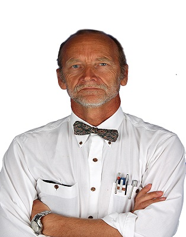

Keynote Speakers
Regulatory Framework of Mobile Broadband to Push Thailand’s New Digital Economy

Colonel Settapong Malisuwan, Ph.D.
Vice Chairman of National Broadcasting and Telecommunications, Thailand Chairman of Telecommunication Commission of The National Broadcasting and Telecommunications Commission (NBTC), Thailand
Colonel Settapong Malisuwan, Ph.D.
There are four specific technology developments that are leading us towards the digital economy namely mobile, social networking, cloud and internet of things. Yet to dive into digital economy and create a digital ecosystem, the widespread penetration of internet is essential particularly amongst unconnected populations and rural communities and is possible through mobile broadband. Mobile Broadband is the backbone of the new digital ecosystem, driving innovation and developing of new services such as digital content, social networking and ecommerce. In the past, the lack of internet access has hindered the unconnected population’s opportunity to elevate their lifestyle due to unequal opportunities when it comes to information and reaping benefits from socio-economic development. Presently, the introduction of mobile broadband ecosystem is possible due to technological advancements and reduction in cost of mobile broadband networks, smart phones, tablets and a growing range of even more cost effective connected devices and objects. The benefits of the new mobile broadband ecosystem are not limited to just the developed world. In fact developing countries like Thailand that do not have an extensive fixed network with just 22% fixed broadband penetration and feature a wired broadband networks that can only reach few urban cities will experience the highest economic development from mobile broadband. With more than 144% mobile phone penetration including high penetration in rural communities, majority of the unconnected populations which are mainly from rural communities will gain internet access through mobile broadband which is a cost effective substitute that will bridge the internet access gap between urban and rural communities. Therefore, innovative mobile solutions are helping to provide underdeveloped, underserved and poverty stricken regions with the opportunity to overcome socio-economic challenges through mobile banking, m-health, m-learning and disaster response. With a supportive regulatory framework, the mobile sector will continue to drive socio-economic progress, benefiting individuals, companies, nations and regional communities alike. While regulatory frameworks will differ from market to market, there are some general principles that apply across the globe. There are a number of steps that Thai policymakers can take to encourage investment in mobile broadband, such as reduction on constraints in achieving market-driven restructuring to capture necessary scale to get return on investment. Governments also have a major role in encouraging innovation and policymakers can help the mobile industry build necessary trust and confidence in the digital economy through anti-cybersecurity policies. Therefore, if policymakers and regulators can introduce policies that encourage competition and innovation, the mobile sector and the wider digital economy will continue to grow creating new jobs and a thriving economy.Biography
| Prefessional Experience | |
| Oct 2011 - Present |
|
| Nov 2007 – Oct 2011 |
Special Assignment assigned by the Deputy Supreme Commander |
| Editorial Board Reviewer | |
| 1. | IEEE Transaction on Electromagnetic Compatibility |
| 2. | Journal of Engineering and Technology Research (JETR) |
| 3. | 3. Interdisciplinary Journal of Information, Knowledge, & Management (www.ijikm.org) |
| Certificates | |
| 2014 | Capital Market Academy Leadership program class 18 (CMA 18), Capital Market Academy |
| 2013 | The Program for Senior Executives on Justice Administration, National Justice Academy, Office of Judiciary |
| Education | |
| 1997 - 2000 | Florida Atlantic University (State University System of Florida), Boca Raton, FL, USA
Ph.D. in Electrical Engineering (Telecommunications) Specializing in Mobile Communication Systems |
| 1994 - 1996 | George Washington University, Washington, D.C., USA: Master of Science in Electrical Engineering in Mobile Communications System |
| 1991 - 1992 | Georgia Institute of Technology, USA Master of Science in Electrical Engineering in Telecommunication Engineering |
| 1985 - 1990 | Chulachomklao Royal Military Academy, Nakhon-Nayok, Thailand Bachelor of Science in Electrical Engineering |
Japan’s Manufacturing Industry and Role of Academic Society in Growth Strategy

Ryuichi Nakata
President of the Society of Instrument and Control Engineers (SICE), Japan
Adviser of Toshiba Corporation, Japan
(Japan’s manufacturing industry and role of academic society in growth strategy)
Ryuichi Nakata
In the latter part of the 20th century, Japan’s industry grew favorably and contributed to society. Engineering contributed to this growth with many inventions and innovations. The measurement, control and system technologies, also contributed to industry and society with the automation of factories and construction of infrastructure. However, in the 21st century, the growth of industry has been delayed and engineering has been faced with new challenges, such as regrowth of manufacturing industry, reduction of social risks, solving environmental issues and so on. On the other hand, in order to develop new industries towards the future, the contribution of engineering is highly expected in the fields of advanced medical care, agriculture/forestry/fisheries, education, and so on. To solve these challenges, this presentation will survey the current conditions of Japan’s manufacturing industry, and the background of the current issues of industry and society, reviewing the modern history of Japan’s manufacturing industry and comparing the manufacturing strategies of Japan, EU and USA. In addition, it will discuss the role of an academic society in these challenges and the importance of collaboration of academic societies, especially international collaboration, because the challenges reside in interdisciplinary fields and new domains.Biography
received B.S. and M.S. degrees in Engineering from Kyoto University in 1974 and 1976 respectively. Also, he received M.S. degree in Mechanical Engineering from Massachusetts Institute of Technology in 1984. He joined Toshiba Corporation in 1976 as an engineer in the fields of measurement, control and systems. He has served as President of Toshiba International Corporation in USA with the business of social infrastructure equipment and systems including industry systems, transportation systems, and power systems for 2003 -2008. He served as Vice President of an in-house company, Power Transmission Distribution and Industry Systems Company and as Corporate Vice president of Toshiba Corporation for 2008-2009. He also served as President of Power Transmission Distribution and Industry Systems Company and as Corporate Senior Vice president of Toshiba Corporation for 2009-2011. He is currently an adviser of Toshiba Corporation and President of SICE, the Society of Instrument and Control Engineers. Through his experience, he is interested in the contribution of an academic society to the growth of the manufacturing industry and the creation of new industries.Read more...
World class ICT curriculum - eLearning, pedagogy and international best practices

Prof. Stanislaw Paul Maj
Consultant of Engineering Institute of Technology, Australia
Former professor, Edith Cowan University, Australia
Prof. Stanislaw Paul Maj
There have been many technological developments that are impacting on all aspects of education. The rate of technological change in education, substantially driven by IT vendors and publishers, is likely to accelerate. Furthermore education is becoming progressively more globalized with the need for institutions to benchmark and compete on a world-wide basis. A number of challenges arise from this scenario. There are not only many eLearning products, but also a rapid evolution of new ones with the associated obsolescence of those currently deployed. It is commonly accepted that eLearning tools significantly enhance teaching and learning outcomes. However a substantial body of research failed to find any support of this claim. It is important to not let Information Technology (IT) drive teaching and learning. Rather eLearning products are a tool and not a solution in themselves. Fundamentally teaching should be based on sound educational theory and practice. However it is demonstrable that this is often not the case. Adopting a more rigorous approach to eLearning based curriculum design and delivery can demonstrably provide significant improvements in both blended and purely on-line environments such as: more material taught in less time but achieving higher order learning outcomes all resident in student long term memory.Read more...